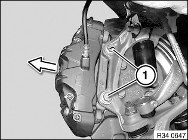
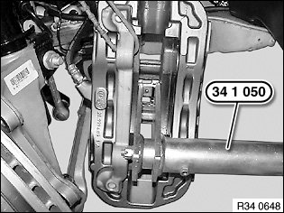
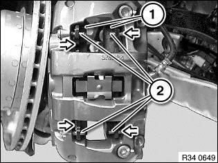
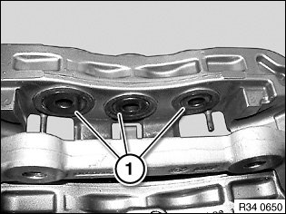
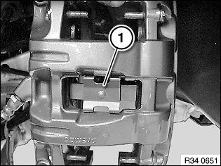

34 11 000 Removing and Installing/Renewing Brake Pads on Both Front Disc Brakes (Brembo)
34 11 000 Removing and installing/renewing brake pads on both front disc brakes (Brembo)Special tools required:
Important!
^ Brake pad wear sensor: after removal it must be replaced (brake pad wear sensor loses its retention capability in the break pad).
^ Retaining spring: for vehicles older than 48 months it is recommended to replace the retaining spring!
Necessary preliminary tasks:
^ Remove wheels.
^ Remove brake pad wear sensor

Release bolts (1) and pull off brake caliper with brake anchor plate towards rear.
Important!
Tie brake caliper back and do not allow to hang from brake hose.
Installation:
Tightening torque 34 11 2AZ.

Important!
When pressing down piston, note brake fluid level in expansion tank.
Overflowing brake fluid will damage the paintwork.
Turn piston back fully with special tool 34 1 050.
Pull brake pads (1) off guide pins (2) and remove.

Important!
Mark any worn brake pads.
In the event of one-sided brake pad wear, do not change brake pads round.
Observe minimum thickness of brake pads.
Installation:
Clean brake pads, brake caliper and guide pins.
Do not grease backs of brake pads sleeve.
Brake pads must be correctly seated on guide pins.

Check minimum brake disc thickness:
- Position special tool 34 1 280 at three measuring points in area (1) and measure.
- Compare measurement result and lowest value with setpoint value.
Important!
New brake pads may only be fitted if the brake disc thickness is greater than the minimum brake disc thickness (MIN TH).

Important!
Do not grease brake pads and guides with brake pad paste.
Clean contact surface (1) of brake pistons with brake cleaner.

Replace expanding spring (1).
Note:
After completing work:
- When installing new brake pads at front and rear axles, brake fluid level must be brought up to "MAX" marking.
- Fully depress brake pedal several times so that brake pads contact brake discs.
- Read and comply with notes on braking in new brake discs / brake pads.
- When replacing linings, reset CBS display in accordance with factory specification.